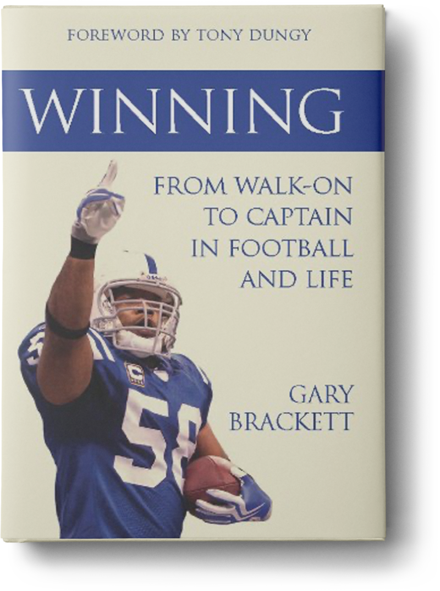

Work with a #1 New York Times-bestselling team to bring your story to life
Titles acquired or edited
by members of our staff
000+
New York Times Bestsellers
000+
National Bestsellers
0000+
New Authors Launched
000mil
Books Sold
Our Memoir-Ghostwriting Services Include
Book Planning
Ghostwriting
Editing
Book Proposals and Queries
Publishing
Navigation
Bestseller
List Targeting
Beta Reader
Testing
Book Coaching
Publishing and Marketing Strategy
Agent
Introductions
Direct Submissions to Publishers
Cultural Accuracy Editing
Our Work
New York Times bestseller 100,000+ sold
#1 national and WSJ bestseller
CEO of Calvin Klein

NFL Captain & Super Bowl Winner
I have worked with Kevin many times over the years for my memoir, book proposal, and articles. With each interaction, Kevin and his team provided excellent editorial services. His firm offers a diverse pool of editors to choose from, which enabled me to hone the type of service I was looking for. Each editor was concise and insightful, giving me constructive notes that really allowed me to take my work to the next level. I felt that they were in for the long haul because Kevin was always there for me when I had follow up questions. A great experience across the board.
Norman Ollestad
New York Times-Bestselling Author of Crazy For the Storm—Over 100,000 Copies Sold
The team at Kevin Anderson & Associates has been incredibly helpful in guiding me through the book-writing and publishing process, as well as building a great book proposal. Within two weeks of working together, Kevin landed me one of the top agents in the industry! Thank you for all your editorial support and assistance through this journey—it means a lot to have such committed partners on such an important project to me.
DJ Spinderella
Member of the legendary hip-hop group Salt-N-Pepa
Pairing an author with the right ghostwriter is inherently fraught with built-in challenges, and these challenges cause risk for both the publisher and the author. Kevin Anderson & Associates reduces those risks by providing a layer of expertise and oversight on the entire process of selecting, coordinating, and managing the contract writing process. The end result is a better book because the right ghostwriter was chosen, the project was managed efficiently, and editorial quality was greatly increased. At HarperCollins Leadership we look forward to working with Kevin and his extensive team of writers and editors on another successful project as soon as possible.
Jeff James, HarperCollins
VP & Publisher. Authors include Rachel Hollis, John C. Maxwell, and Tilman Fertitta
Our Team
Stephen S. Power
Executive Editor
#1 New York Times-bestselling editor and former Big 5 executive editor with 500+ titles
READ FULL BIO
Jessica Sindler
Managing Executive Editor
#1 New York Times-bestselling editor and former senior editor at Harper and PRH
READ FULL BIO
Roger Scholl
Senior Executive Editor
#1 New York Times bestselling editor and former Big 5 executive editor with 55+ bestselling titles
READ FULL BIO
Why Choose
Kevin Anderson & Associates?
#1 Bestselling Ghostwriters
Work with New York Times-bestselling memoir writers who know how to develop your story into a publish-worthy book.
Big-5 Acquisitions Editors
Your project will be managed and edited by a former acquisitions editor from a Big-5 publisher with numerous New York Times bestselling titles.
Collaborative Approach
Work closely with a team of experts who will take the time to understand the narrative power of your life story. Together we’ll write a memoir that captures your unique voice and captivates your target audience.
Agent and Publisher Access
Our clients include literary agents and publishers who specialize in memoir and biography, offering you unparalleled access to the industry. While not every book is suitable for trade publishing, we regularly secure publishing deals for our clients.
Publishing Navigation
Publishing Navigation
Proven Record of Success
Our track record includes numerous award-winners and #1 New York Times bestsellers. Leading publishers and agents hire KAA directly to help their authors.
The KAA Ghostwriting Experience
We carefully customize our ghostwriting process to meet your specific needs and publishing goals. The process below describes a standard ghostwriting experience.
Before any commitments are made or contracts are signed, we take the time to get to know you, your book, and your publishing goals. We’ll provide consultation regarding the publishing industry and discuss the optimal strategy for your book.
Through a series of phone calls and questionnaires, we’ll help you think through your book concept, platform, audience, and marketplace. Our preparation also includes reviewing any drafts, notes, articles, outlines, and other relevant background materials.
Every great book ever written was the result of an effective team. With KAA, you have an industry-leading team of bestselling writers, editors, and publishing executives that will develop a comprehensive strategy, navigate the publishing industry for you, and help you achieve your publishing goals.
Your Book Editor
Your editor will lead the book-writing process and collaborate with the team to (a) develop the book’s positioning, core concepts, structure, and themes; (b) provide market analysis and advise on target audience, marketing, and publishing strategy; (c) edit and review the manuscript throughout the book-writing process.
Note: All of the in-house editors at KAA are former acquisitions editors at Big-5 publishing houses (Penguin Random House, HarperCollins, Simon & Schuster, Macmillan, and Hachette) who have acquired and edited hundreds of traditionally published books, including numerous New York Times bestsellers.
Your Writer/Ghostwriter
Your writer will work with you to pen your words to the page and revise the manuscript to ensure it captures your voice and vision. Our impressive roster of writers includes #1 New York Times-bestselling and award-winning authors in a wide variety of genres.
Your Project Manager
There are a lot of moving parts when it comes to writing and publishing a book. Your project manager will establish and maintain the timeline, schedule interviews, and be a helpful resource for any questions that come up along the way.
Publishing Executives
Our team of publishing executives work behind the scenes with your writing team to ensure your book is aligned with your goals. They’ll also help you find the best home for your book (more on that below).
Meet with your book-writing team in person or via video conference for in-depth strategy sessions to brainstorm, plan, and build the foundation of your book. By the end of the sessions, you will have a detailed manuscript outline that captures your vision, as well as a publishing and marketing strategy that aligns with your goals.
It’s time to start writing your book! We’ll handle the heavy lifting so you can remain focused on the bigger picture, as well as life’s demands.
Your Words. Your Voice. Our Pen.
At KAA, we ensure that your book is unmistakably yours. Through ongoing interviews and careful editing, we’ll ensure every idea, word, and piece of content sounds and feels like your distinct voice.
Ongoing Manuscript Review and Revisions
Your writer will develop your manuscript one section at a time, giving you ample opportunity to discuss the draft in process and suggest revisions.
Your editor will oversee the writing process and provide ongoing editorial review and direction to ensure the quality of the writing is up to publishing industry standards.
Finalize Your Draft
Once the manuscript is complete and meets your full approval, an additional editor (who has no knowledge of the project) will perform a “cold read,” editing the text for grammar and providing a final round of analysis and consultation.
Your manuscript will be reviewed by 20+ impartial lay readers from within your target demographic who will provide detailed raw feedback and suggest improvements. The writing team will review this feedback with you and revise the book to ensure it resonates with your audience. Beta readers allow you and your team to make editorial decisions based on data.
Did you know less than 0.1% of people who want to write a book actually publish one? Not at KAA. Whether you want to break into traditional publishing, collaborate with a great hybrid publisher, or make the most of what self-publishing offers, we’ll guide you every step of the way. At KAA, we have former literary agents on staff, partnerships with dozens of publishers, and relationships with the most seasoned book marketers and PR teams to launch your book. We won’t just help you write your book, we’ll ensure you have a remarkable publishing experience.
Our offices are in New York, Nashville, and Los Angeles.
Can’t get to us? We can bring our team to you.
Share Your Story with the World
Having your memoir written and published is the single greatest way to tell the unique story of your life and share it with others. At Kevin Anderson & Associates, we’re passionate about telling your story the way you always envisioned it would be told. Our personalized ghostwriting approach takes great care to deliver a final product that exceeds your expectations and gets your book on the shelf.
Every one of our client relationships starts with a free, no-obligation consultation. Contact us today to get started on your path to becoming a published author.
FAQ
The internet is littered with online writing and editing services, making it nearly impossible to sift through the scams and Our ghostwriting process for memoirs is flexible and customizable to your preferences. We can work with you as consultants and editors as you develop the content on your own, or we can ghostwrite the book for you, based on interviews and other information you provide us. We typically gather information in-person or via email and phone conversations, though the process may also include site visits and independent research as necessary.
While we understand that every client is unique and we are happy to adjust our ghostwriting services to suit your preferences, we typically approach the process as a team. Please contact us for a personalized and detailed proposal for your book.
It all depends on the story you want to tell. Lucky for you, we have a team of talented writers and editors to help you articulate and shape the narrative of your book. Your writer can help you to make choices about which details of your life to include or omit in order to convey your central theme effectively. Feel free to give us a call for a free consultation!
In general, we’re very adept at matching clients with the ghostwriter who will best suit them; however, we are also more than willing to provide you with writing samples and credentials for your potential ghostwriter. We can arrange for phone calls between you and potential writers and you are more than welcome to select between several options. Our goal is to make sure you’re fully satisfied with your ghostwriting experience from the very beginning.
You can have as much or as little interaction with your ghostwriter and editor as you’d like! We tailor our process to suit your schedule and your needs. Generally, writers opt to have regular interviews and collaboration sessions with their ghostwriter or editor via phone or video call, as well as ongoing communication by email. In certain instances, it is also possible to arrange for in-person meetings with your ghostwriter or editor. The entire process can be molded to best support you!
If you’re unhappy with the material you’ve received from your writer, you can simply give that feedback directly to the writer or senior editor, and we will revise accordingly. Our skilled ghostwriters are able to shift their tone and style based on input from you to ensure that you connect with the writing. If after multiple revisions you are still unhappy with the writing, we can assign a new writer to the project who is a better match for you—this type of flexibility is one of the unique benefits of working with a professional firm.
Yes, our ghostwriting packages can include research services. Whether your book requires basic internet searches or rigorous scholarly research, we have writers on staff who can conduct effective research and synthesize it into your book.
There are many similarities between memoirs and autobiographies—both are nonfiction, factual accounts based on the author’s life, written in the first person—but the biggest difference is the timeframe that is covered in each genre.
Simply put, an autobiography tells the entire story of the author’s life, while a memoir tells a specific story from parts of the author’s life. A memoir might address a particular period of time or phase of life that holds significance, or events that are all related in some way. An autobiography generally covers all aspects of the author’s life up to the time it is written, though some experiences may be given more or less emphasis to convey the desired theme or overarching message.
When choosing whether to write a memoir or an autobiography, consider whether you would like to write your life story, from the beginning to the present day, or whether you would like to focus in on a particular period of time.
Our editing and consultation services are perfectly suited for writers who are looking to improve their work. We can give input at whatever level of detail you’d like—overarching feedback on the structure and concept of the book, critical review on the flow and transitions, or copy edit the text itself. At your request, we can also address specific issues in our review of your work.
We know that the publishing industry can be daunting, especially for first-time authors, so we offer consultation and comprehensive support for traditional, hybrid, and self-publishing outlets. Most of our all-inclusive ghostwriting packages include an original and customized query letter or book proposal free of charge. This invaluable marketing tool will be used to promote your book to literary agents and publishers. Not sure how to find a reputable literary agent? We’ve got you covered—we’ll provide you with a list of genre-appropriate agents to whom you can send your query letter or proposal!
The duration of the ghostwriting process is partly up to you—the author! Depending on your schedule and desired level of involvement, your ghostwriter will develop material for you to review and approve on a weekly or biweekly basis. While every book is unique, on average, a 200-page or 50,000-word manuscript will take between four and nine months to develop. We can often rush these services for you if you need to meet a specific publishing date.
Yes and yes! We will gladly edit and incorporate any content that you provide. Depending on the strength of the content you’ve written, it may save you a lot of money!
The internet is littered with online writing and editing services, making it nearly impossible to sift through the scams and find a legitimate and trustworthy service. Here are some questions to ask when you’re vetting companies to ensure that you pick a reliable firm for all your writing and editing needs:
1. Is the price right? If it seems too good to be true, it probably is. Developing a high-quality book can take hundreds of hours of work and requires a high level of expertise—don’t be tempted by third-rate writers who market “affordable” prices.
2. Who owns the rights to the book? It’s your book, which means that you should own the rights to your content. Be wary of ghostwriters asking for partial rights to your material.
3.What is the payment arrangement? You should always pay for ghostwriting services in installments and never 100% upfront. After the initial deposit, you should make subsequent payments only if you’re happy with what the ghostwriter has written up to that point. You should have clearly defined milestones for payments to ensure that you and your writer know what to expect.
4. Who’s in charge? Working with a ghostwriter is a collaborative effort, but you should have the final say on all content decisions. If a writer is unwilling to put your needs and requests first, then it’s not going to be your book—it will be theirs.
5. Is the service confidential? This is YOUR book. A ghostwriter’s name should never appear on the completed manuscript unless you want it to be there.
Whatever service you decide to use, be sure to protect yourself. Make certain that you are working with a reputable company with experience.


.svg)